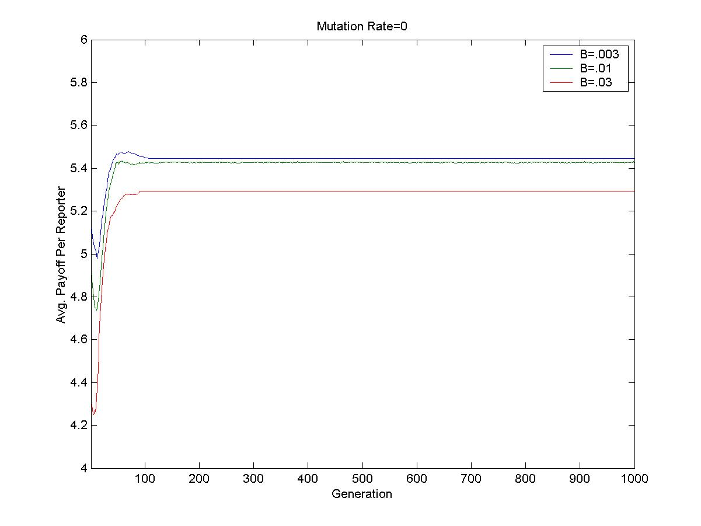
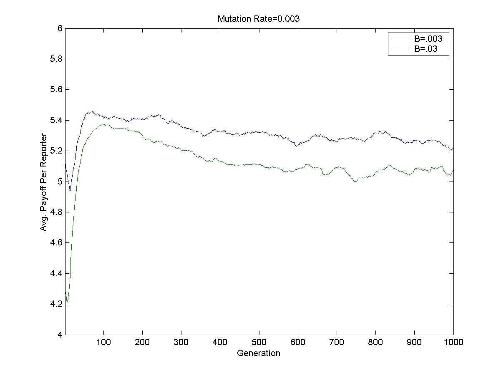
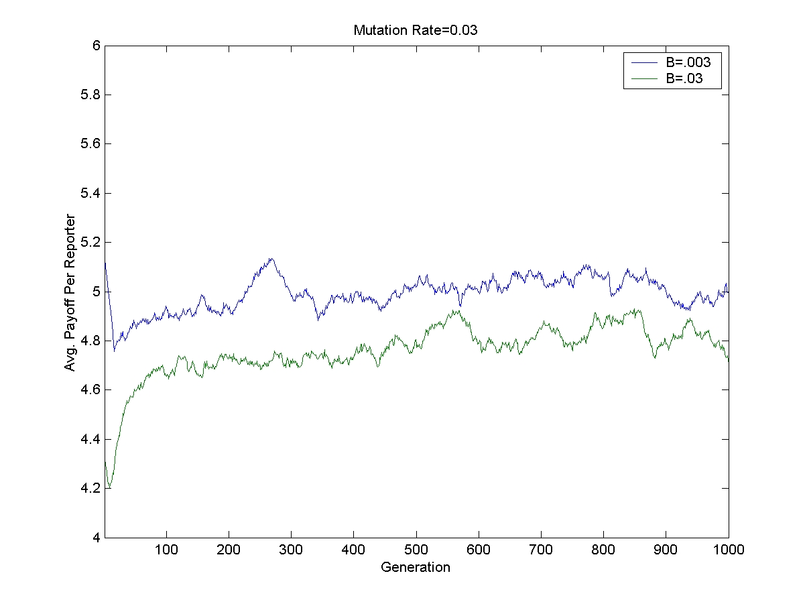

Robert Gazzale
Sibel Sirakaya
Our framework captures some important features of the "uncovering a scandal" environment.
First, there are some basic complementarities in the uncovering process. We assume an endogenous team size of two, and say that this team will perform better if both reporters cooperate on the task at hand. We also assume that scandals are best uncovered when many different teams are working diligently on the problem. While there are of course scandals that are uncovered by one news team, this seems to be a good approximation of a majority of scandals.
Second, within each team, it seems natural to assume that there are some incentives to not cooperate. In practice, we can think of this "defecting" as shirking. It thus makes sense that if one of both shirks, the chance of your team contributing to the uncovering is decreased.
Finally, the value a team receives from contributing to the uncovering of a scandal depends on what other teams do. If too few teams work hard on the scandal, the full details will not be uncovered. If too many teams work hard on the scandal, the scandal gets fully uncovered, but your team gets less credit. Thus, from the perspective of the reporters, there is an optimal number of fully cooperating teams.
We thus have a prisoner’s dilemma game where the actions in any one stage game create an externality on the payoffs of other stage games. Furthermore, this externality can be positive or negative.
In order to better span strategy space, we assume that there are 200 reporters divided into 100 teams of 2.
Our starting point is the stage game represented by the following normal form game.
|
|
Defect |
Cooperate |
|
Defect |
4,
4 |
8,
3 |
|
Cooperate |
3,
8 |
6,
6 |
In order to incorporate the effects of externalities, we modify the game as follows.
|
|
Defect |
Cooperate |
|
Defect |
4,
4 |
8-F(N),
3-F(N) |
|
Cooperate |
3-F(N),
8-F(N) |
6-F(N),
6-F(N) |
N=Number of others who Cooperate-Cooperate
F(N)=|N-40|*B
While it might appear odd to have the scandal fully uncovered only with at least 40 fully cooperating teams, we do not feel that this is qualitatively different than needing 4 out of 10 teams.
2 state automata defines Player strategies. Strategies move from generation to generation via Genetic Algorithm.
In the beginning of every generation, players are matched. For the initial generation, all matches are random. In subsequent generations, we keep the best performing teams together, and randomly rematch the remaining reporters.
In each generation, each team plays the infinitely repeated game. Payoffs are calculated for each player based upon the strategies employed by both players in the team, modified by the outcomes of other games. Fitness is then assigned to the strategies by limit of he means payoffs.
For the next generation, a new strategy population is generated, with stronger strategies more likely to reproduce via a roulette mechanism. Strategies are then mutated, with the probability of a mutation to a bit of the strategy string determined by a mutation rate which we can vary.
For mutation rates equal to 0, .003, and .03, we look at externality size B ranging from .003 to .03. The following table details the maximum per-reporter payoff available. As a consequence of the externality taking place only for cooperate-cooperate, the maximal per-reporter payoff is found only for 60 players playing CD or DC in every round, with the rest cooperating.
|
B |
Max. Per-Reporter Payoffs |
|
.003 |
5.82 |
|
.01 |
5.7 |
|
.03 |
5.7 |

Figure 1
Figure 1 reports experiments with mutation rate equal to 0. We see that even low values of B (B=.003), results in too little cooperation. When we increase B to B=.03, performance appears to suffer markedly, most likely due to the difficulty in finding strategy pairs that cycle through CD and DC.

Figure 2
As we begin to introduce mutation, performance worsens. This is demonstrated in figure 2, where payoffs for both B=.003 and B=.03 worsens relative to mutation rate equal zero. We conjecture that since it is difficult to find a pair of cycling strategies, as we increase the mutation rate, it becomes more difficult to maintain these pairs, especially with partner rematching. This is supported by the date from higher mutation rates.

Figure 3
Finally, Figure 3 reports runs with a mutation rate of .03. We see a further deterioration in performance, as defection-defection becomes increasingly popular.
While our interpretation of the uncovering a scandal was a little unorthodox, the Prisoner’s Dilemma Search Problem with Externalities is not an uncommon framework. Many large organizations rely heavily on combined input of many performing teams.
With this interpretation, we can view the overall game: maybe the firm works best when some teams work at highest effort and some teams work at a high level (CD pays 11 in the no externality stage game compared with 12 for CC). An unintended finding of our work is, in hindsight, not so surprising: the structure of payoffs (i.e. incentives) matter in the ability to find equilibrium. The asymmetry in the payoffs to the high but not highest performing teams made it very difficult for teams to find, and particularly for high mutation rates, stay at the required cycling strategies.